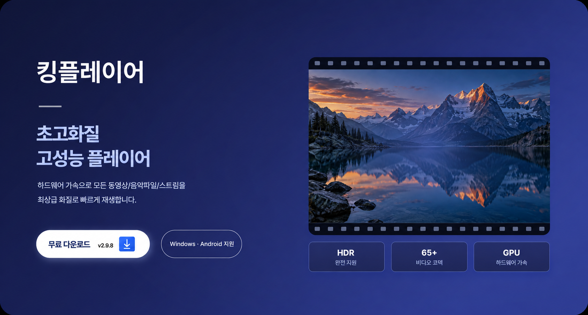

DESKTOP
지원킹플레이어 — 초고화질 고성능 플레이어

킹플레이어
초고화질 고성능 플레이어
하드웨어 가속으로 모든 동영상·음악파일·스트림을 최상급 화질로 빠르게 재생합니다.- 평생 무료
- 광고 없음
- 개인·기업·누구나 무료
AVAILABLE ON
다양한 OS를
다양한 OS를
지원합니다
나에게 맞는 환경에서 킹플레이어를 만나보세요.
MOBILE
지원Android
WHY KINGPLAYER킹플레이어의
킹플레이어의
주요 기능
화질과 속도, 코덱과 자막까지.
재생에 필요한 기능을 하나로 담았습니다.
01 / VISUAL
고품질 영상 렌더링
최상급 화질 렌더러. 명도/대비/채도/색상 실시간 조절, 회전/반전 지원.
HDR 완전 지원
02 / SPEED
하드웨어 가속
하드웨어 가속으로 4K, 8K, 16K까지 부드럽게 재생. 하드웨어 가속 자동 적용 / 미지원 시 소프트웨어 자동 지원
03 / FORMAT
모든 코덱 지원
65개+ 비디오 코덱, 19개 픽셀 포맷. H.264, HEVC, AV1, VP9, ProRes 등
어떤 영상이든 바로 재생
04 / SUBTITLE
완벽한 자막 지원
ASS/SSA/SRT/SMI/VTT 렌더링, MKV 내장 자막, 외부 자막, 폰트 설정. AI 자막 자동 생성(Whisper 로컬 GPU/CPU + OpenAI API)